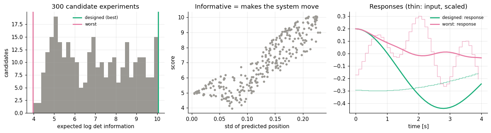
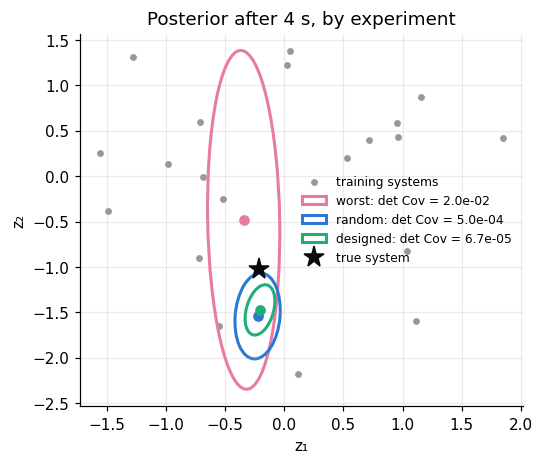
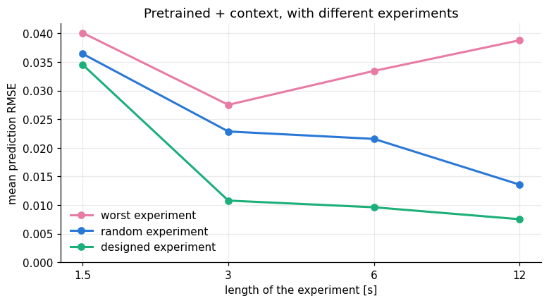

import numpy as np
import matplotlib.pyplot as plt
import dynutils
from dynutils import sample_system, simulate, multisine, predict, adapt, rmse
dynutils.set_style()
rng = np.random.default_rng(dynutils.SEED)
COLOR = dynutils.COLOR
family, train_systems, train_data, train_fits = dynutils.build_family(rng)def fisher(family, U_in, Z, eps=1e-4):
# Fisher information for inputs U_in (N, T) at contexts Z (M, 2) -> array (N, M, 2, 2).
U_in = np.asarray(U_in)[:, None, :]
S = np.stack([(predict(family.decode(Z + eps * e)[None], U_in)
- predict(family.decode(Z - eps * e)[None], U_in)) / (2 * eps)
for e in np.eye(2)], axis=-1)
return np.einsum("nmti,nmtj->nmij", S, S) / family.sigma**2 + np.eye(2)
def design_score(family, U_in):
return np.linalg.slogdet(fisher(family, U_in, family.z_train))[1].mean(axis=1)
T = 40
candidates = np.array([multisine(T, rng) for _ in range(300)])
scores = design_score(family, candidates)
best, worst = candidates[np.argmax(scores)], candidates[np.argmin(scores)]
motion = predict(family.mean, candidates).std(axis=1) # how much the average system moves
fig, axes = plt.subplots(1, 3, figsize=(13, 3.6))
axes[0].hist(scores, bins=30, color=COLOR["none"])
axes[0].axvline(scores.max(), color=COLOR["designed"], lw=2, label="designed (best)")
axes[0].axvline(scores.min(), color=COLOR["worst"], lw=2, label="worst")
axes[0].set(xlabel="expected log det information", ylabel="candidates", title="300 candidate experiments")
axes[0].legend(fontsize=8)
axes[1].scatter(motion, scores, s=10, color=COLOR["none"])
axes[1].set(xlabel="std of predicted position", ylabel="score", title="Informative = makes the system move")
tt = dynutils.DT * np.arange(T + 1)
for u_, col, lab in ((best, COLOR["designed"], "designed"), (worst, COLOR["worst"], "worst")):
axes[2].plot(tt, predict(family.mean, u_), color=col, label=f"{lab}: response")
axes[2].step(tt[:-1], 0.3 * u_, where="post", color=col, lw=1, alpha=0.6)
axes[2].set(xlabel="time [s]", title="Responses (thin: input, scaled)"); axes[2].legend(fontsize=8)
plt.tight_layout(); plt.show()
print(f"correlation(score, motion) = {np.corrcoef(motion, scores)[0, 1]:.2f}")
correlation(score, motion) = 0.89
The physics is visible. The best experiments push slowly enough to swing the cart through large, two-sided motions near the resonance band from chapter 01. The worst ones shake it at high frequency, which the mass filters out, so the sensor sees mostly noise. The score is not just "more motion" though: how the system moves decides which coefficient combinations become distinguishable.
2. Same system, three different experiments
The same new system, identified with three different 4-second experiments:
new = sample_system(rng)
fig, ax = plt.subplots(figsize=(5.2, 4.4))
ax.scatter(*family.z_train.T, s=12, color=COLOR["none"], label="training systems")
posterior_det = {}
for u_, col, lab in ((worst, COLOR["worst"], "worst"), (multisine(T, rng), COLOR["context"], "random"),
(best, COLOR["designed"], "designed")):
z_, cov_, _ = adapt(family, simulate(new, u_, rng)[1], u_)
posterior_det[lab] = np.linalg.det(cov_)
dynutils.ellipse(ax, z_, cov_, col, f"{lab}: det Cov = {posterior_det[lab]:.1e}")
ax.plot(*z_, "o", color=col)
ax.plot(*family.project(new["eta"]), "*", ms=14, color=COLOR["truth"], label="true system")
ax.set(xlabel="z₁", ylabel="z₂", title="Posterior after 4 s, by experiment"); ax.legend(fontsize=8)
plt.show()
The designed experiment shrinks the uncertainty region by orders of magnitude. But look closely: the smallest ellipse does not contain the true system. The Laplace posterior is overconfident, because it assumes white noise and a perfect model, while the real disturbance is coloured and the model lacks the quintic term. A small ellipse is a promise, not a guarantee.
3. Does it actually improve predictions?
Does the promise deliver better predictions on new systems? We repeat the comparison over 60 new systems per budget. In every trial a fresh pool of 200 candidates is scored, the designed and the worst experiment are picked, and a random experiment is drawn without looking at its score.
design_budgets = [15, 30, 60, 120]
design_err = {m: np.zeros((len(design_budgets), 60)) for m in ("worst", "context", "designed")}
for i, T in enumerate(design_budgets):
for n in range(60):
pool = np.array([multisine(T, rng) for _ in range(200)])
sc = design_score(family, pool)
inputs = dict(worst=pool[np.argmin(sc)], context=multisine(T, rng), designed=pool[np.argmax(sc)])
s = sample_system(rng)
u_val = multisine(300, rng, n=6); q_val, _ = simulate(s, u_val, rng, noise=False)
for m, u_ in inputs.items():
z_, _, _ = adapt(family, simulate(s, u_, rng)[1], u_)
design_err[m][i, n] = rmse(predict(family.decode(z_), u_val), q_val)
seconds = dynutils.DT * np.array(design_budgets)
fig, ax = plt.subplots(figsize=(8, 4))
for m, lab in (("worst", "worst experiment"), ("context", "random experiment"), ("designed", "designed experiment")):
ax.plot(seconds, design_err[m].mean(axis=1), marker="o", color=COLOR[m], label=lab)
ax.set(xscale="log", xticks=seconds, xticklabels=[f"{x:g}" for x in seconds], ylim=(0, None),
xlabel="length of the experiment [s]", ylabel="mean prediction RMSE",
title="Pretrained + context, with different experiments")
ax.xaxis.set_minor_locator(plt.NullLocator())
ax.legend(); plt.show()
print(" length | random designed | reduction | designed wins | 95% CI of mean reduction")
design_stats = []
for i, T in enumerate(design_budgets):
diff = design_err["context"][i] - design_err["designed"][i]
boot = diff[rng.integers(0, diff.size, (5000, diff.size))].mean(axis=1)
lo, hi = np.percentile(boot, [2.5, 97.5])
design_stats.append(dict(reduction=diff.mean() / design_err["context"][i].mean(),
win=np.mean(diff > 0), ci=[lo, hi]))
print(f"{T*dynutils.DT:5.1f} s | {design_err['context'][i].mean():.4f} {design_err['designed'][i].mean():.4f} |"
f" {100*diff.mean()/design_err['context'][i].mean():5.1f} % | {100*np.mean(diff > 0):3.0f} % |"
f" [{lo:+.4f}, {hi:+.4f}]")
length | random designed | reduction | designed wins | 95% CI of mean reduction 1.5 s | 0.0364 0.0345 | 5.2 % | 52 % | [-0.0040, +0.0077] 3.0 s | 0.0229 0.0108 | 52.8 % | 75 % | [+0.0070, +0.0181] 6.0 s | 0.0216 0.0096 | 55.4 % | 78 % | [+0.0058, +0.0200] 12.0 s | 0.0136 0.0075 | 44.5 % | 77 % | [+0.0032, +0.0094]
Read the table as a function of the budget:
- Very short (1.5 s): no experiment can reveal much in a quarter of an oscillation period. The difference between designed and random is not significant (the interval contains zero); the prior does most of the work.
- 3 s and more: design pays off. The designed experiment lowers the error by roughly a third to a half, wins about three out of four paired trials, and its confidence interval excludes zero. The worst experiments waste most of the data.
- Growing budgets: the relative advantage is largest for the shortest informative experiments and shrinks as the experiment gets longer, because random experiments then also contain enough information.
The comparison is fair by construction: the random input is never scored, and the designed input is chosen before the new system is touched. Even so, the designed experiment does not win every single trial. Noise and model mismatch remain, and the criterion targets parameter uncertainty, not the prediction error itself. Designing for goal-oriented criteria is a research topic of its own.
Exercises
Exercise 1: Does the designed experiment stay good for every system?
Using the design_budgets[1] (3 s) results, check what fraction of the 60 trials the designed
experiment's error is worse than the worst experiment's. Is "design never hurts" true in
practice?
Solution
i = 1
frac_worse = (design_err["designed"][i] > design_err["worst"][i]).mean()
frac_worse
A small but nonzero fraction of trials have the designed experiment doing worse than the worst one: the design criterion is an average-case guarantee (it is scored by averaging over the training contexts), not a per-trial one, and a particular new system's noise realisation can still work against it.
Exercise 2: Scoring candidates without the family
Score the same 300 candidates from section 1 using only motion (the std of the average system's
predicted response) instead of design_score, and pick its best and worst. How similar is the
motion-based "best" input to the Fisher-information-based best?
Solution
motion_best, motion_worst = candidates[np.argmax(motion)], candidates[np.argmin(motion)]
np.corrcoef(motion_best, best)[0, 1]
The two "best" inputs are correlated but not identical: design_score also cares about how the
system moves (which parts of state space distinguish z₁ from z₂), so an input that merely maximises
motion is a decent but imperfect proxy for the Fisher-information criterion, consistent with the
0.85 correlation reported in section 1.